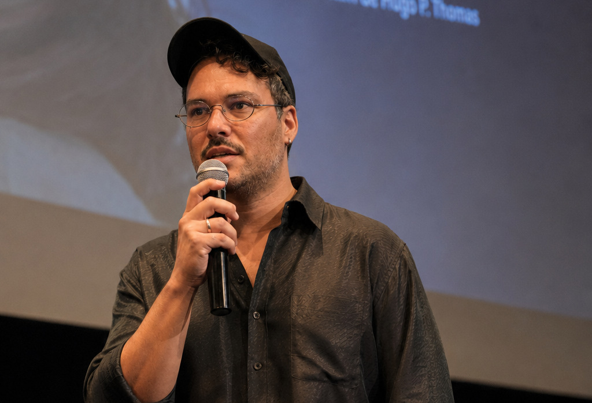
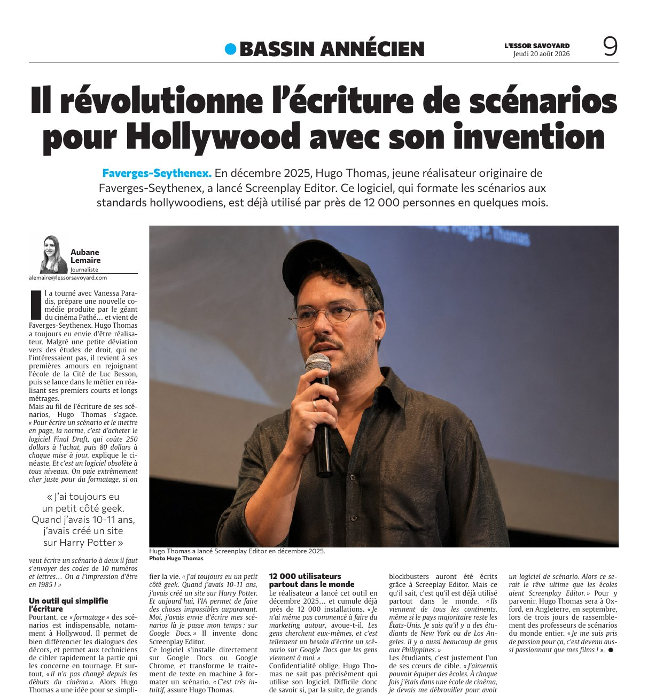

“He is revolutionising screenwriting for Hollywood with his invention”
Faverges-Seythenex. In December 2025, Hugo Thomas, a young director from Faverges-Seythenex, launched Screenplay Editor. The software, which formats screenplays to Hollywood standards, is already used by nearly 12,000 people after only a few months.

He has worked with Vanessa Paradis, he is preparing a new comedy produced by the film giant Pathé, and he comes from Faverges-Seythenex. Hugo Thomas always wanted to direct. Despite a short detour through law school, which did not interest him, he came back to his first love and joined Luc Besson's École de la Cité, then started working, directing his first shorts and features.
But while writing his screenplays, Hugo Thomas grew frustrated. “To write a screenplay and lay it out, the norm is to buy Final Draft, which costs 250 dollars, then 80 dollars at every update,” the filmmaker explains. “And it is outdated on every level. You pay a fortune just for formatting, and if two people want to write a screenplay together they have to email each other codes with ten numbers and letters. It feels like 1985.”
A tool that makes writing simpler
And yet this formatting is essential, particularly in Hollywood. It separates dialogue from scenery clearly, and it lets the crew find the part that concerns them quickly during the shoot. Above all, “it has not changed since the beginnings of cinema”. So Hugo Thomas had an idea to make his own life easier.
“I've always had a bit of a geek side. When I was ten or eleven, I built a Harry Potter website.”
“And today, AI makes things possible that were not possible before. And I wanted to write my screenplays where I already spend my time: in Google Docs.” So he invented Screenplay Editor.
The software installs directly into Google Docs or Google Chrome, and turns the word processor into a screenplay formatting machine. “It is very intuitive,” Hugo Thomas says.
12,000 users around the world
The director launched the tool in December 2025, and it already adds up to nearly 12,000 installs. “I have not even started marketing it,” he admits. “People look for it themselves, and writing a screenplay in Google Docs is such a need that they come to me.”
Privacy comes first, so Hugo Thomas does not know precisely who uses his software. Which makes it hard to know whether, one day, major blockbusters will have been written with Screenplay Editor. What he does know is that it is already used all over the world. “They come from every continent, even if the leading country is still the United States. I know there are students in New York and Los Angeles. There are also a lot of people in the Philippines.”
Students are one of the people he is building for. “I would like to be able to equip schools. Every time I was in a film school, I had to work out a way to get hold of screenwriting software myself. So the ultimate dream would be for schools to have Screenplay Editor.” To get there, Hugo Thomas will be in Oxford, England, in September, for three days that bring together screenwriting professors from around the world. “I have become passionate about this. It is now as exciting as my films.”
Article by Aubane Lemaire, published in French by L'Essor Savoyard on 20 August 2026, Bassin Annécien section, page 9. Translated into English and republished with the paper's permission. Read the French original (subscribers only).
The page as it ran
